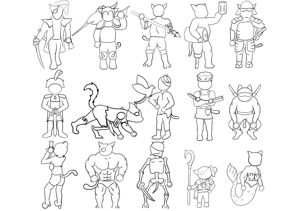
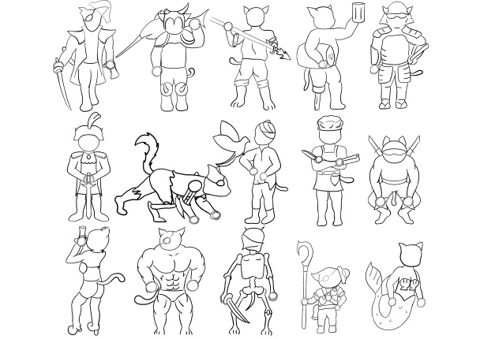
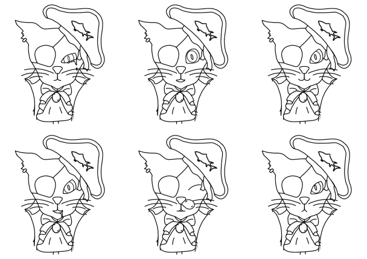

Proyect: The Pirate Cat
Project proposed in the 3rd year of the
Videogames' Design and Development degree in the URJC
Objective:
Create the concept art of a free concept character.
The student should follow a professional concept art development:
1- Make 10 or more digital or paper shadows of the posible character's body
2- Make the parcial developments 3 of the initial shadows
3- Make a Character Model sheet
10 or more shadows
 

After drawing 15 shadows on paper and scanning them,
I decided to draw the lineart and swadows of all of them
The 15 models my pirate cat could have would be, in order:
Captain, Viking, Fisherman, Drunk, Samurai,
Napoleon, Mecha, Tamer, Cook, Ninja,
Gorgeous, Buff, Undead, Small, Siren
3 or more parcial developments


I decided to develop the Captain, Ninja and Mecha cats
I detailed the characters and use a basic b/w color cover
Character Model sheet
This sheet will need to have the following pictures:
+ A beauty of the character (a color picture in neutral pose)
+ 3 or more alternative colors of the character
+ Turnaround in A or T pose, at least 3 views
+ At least 3 non neutral poses
+ At least 3 face expresions
+ Opcional: clothes, accesories variants, extras
Beauty


I shadowed the b/w model and painted it
Alternative colors


With the shadowed b/w model, I decided to use 3 color paletts:
● 1: Blue and brown with yellow and orange details to maybe identify a Spanish Captain
● 2: Dark brown and green with light brown and white details to maybe identify an American Captain
● 3: Light grey, red and blue with golden details to maybe identify an English Captain
Turnaround

I decided to use an A pose becouse that this character wont be commonly lifting his arms
3 Non-natural poses


To develop these poses I used the Ganplank's splasharts and a drinking pirate photo
Facial expresions
To make the facial expresions I used the detailed lineart
I decided to draw the sad, surprised, happy,
hungry, sleepy and angry expresions
Extra things


Based on this character I decided to make a Pirate Cat logo using Adobe Photoshop